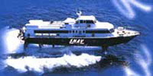

Conference bus
 The Conference will organize free transport:
- on June 29 from Catania airport to Milazzo;
- on July 2 from Milazzo to Catania airport.
The bus provided by the organization will depart from Catania airport on June 29th, 2011 at 3:30 p.m. (the bus will be at the exit of the arrival area), just in time to catch the hydrofoil that will start from Milazzo hydrofoil terminal at 6:05.p.m. Due to the hydrofoil timetable, the bus departure will be sharp (3.30 pm on June 29th).
For those participant that will take the school bus on June 29, we remind you that meeting point is at the Exchange Office, next to the bar CULTO. Please look for organizers holding up "Lipari School" signs and posters.
On July 2nd, 2011, the school bus will leave from Milazzo at 9,30 A.M. with arrival at Catania airport at 11,00 A.M. (hydrofoil from Lipari will start at 7,00).
Other transportation services
Public bus
In the case you will not take advantage of School transportation facilities,
you may want to take the "GIUNTA" bus departing from Catania airport
(arrival area) at 16:50 p.m.. That bus reaches the hydrofoil terminal in
Milazzo just in time to catch the 19:00 p.m. hydrofoil to Lipari. (This is
the last hydrofoil).
The last ship from Milazzo to Lipari is at 22:00 p.m. (N.G.I. company)
Shuttle service “Ama Le Eolie”
- leaving from Catania airport at 10,50 - 13,30 - 17,20 every day
- leaving from Milazzo terminal hydrofoil at 8,15 - 10,20 - 15,30 every day
Meeting point in Catania apt. is at the Exchange office, next to the bar Culto.
If only one person requests the group transfer the price is Euro 50,00.
Two persons Euro 25,00.
Attention: for this service reservation is obligatory by fax to: + 39 090 9227733
Cell. Number (English) 333 1323329 or 347 4413613
Other information to reach Lipari
You can search for more information on the SIREMAR homepage (hydrofoils and ferries from Milazzo, Naples) or on the SNAV homepage (hydrofoils and ferries from Milazzo, Naples,Messina, Reggio Calabria, Palermo, Cefalù), or you can contact the following ticket offices:
| Office | Dealer of | Address | Telephone | Fax |
|---|---|---|---|---|
| Eolian Tour | Siremar | Via Sotto Monastero | 0909812193 | 0909880170 |
| Eoltravel snc | Alitalia-SNAV | Via V. Emanuele | 0909811122 | 0909880311 |
| N.G.I. | Traghetti FFS | Via T. M. Amendola | 0909811955 |
Additional information may be found at:
Travel Map